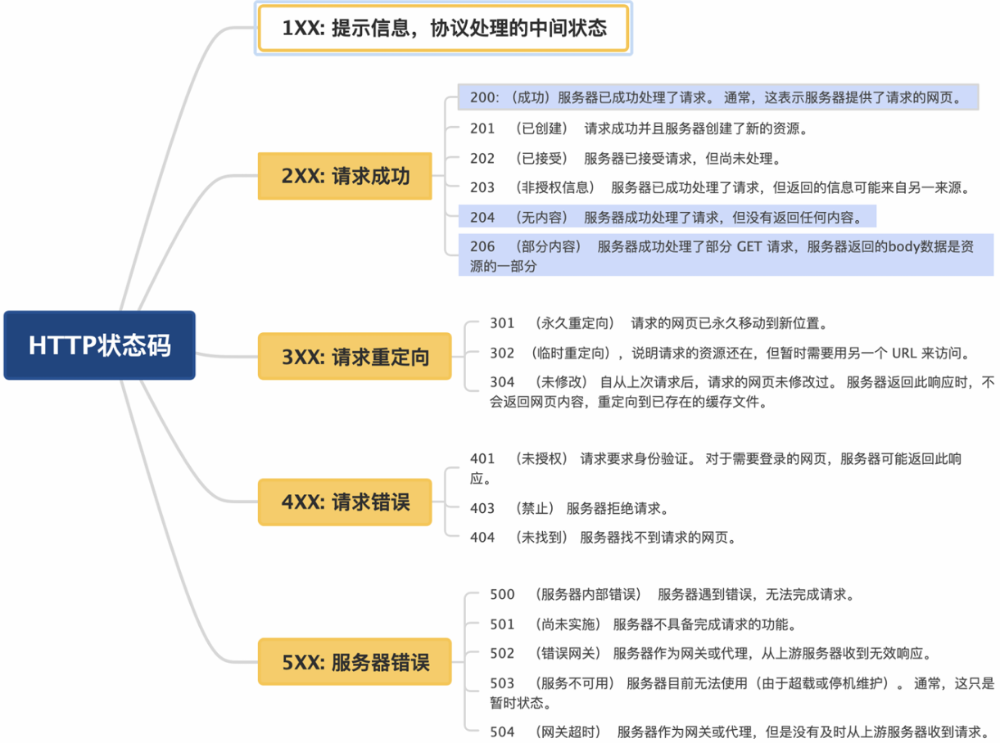

计算机网络
TCP&&UDP
Http
状态码
重点的几个状态码：
- 200（成功）：客户端请求成功
- 301（永久重定向）：该资源已被永久移动到新位置，将来任何对该资源的访问都要使用本响应返回的若干个URL之一
- 302（临时重定向）：请求的资源现在临时从不同的URI中获得
- 304（未修改）：自上次请求后，请求的网页未修改过，服务器不返回网页内容，重定向到已存在的缓存文件
- 400（请求报文语法有误）：请求报文语法有误，服务器无法识别
- 401（未授权）：请求需要认证
- 403（禁止）：请求的对应资源禁止被访问
- 404（未找到）：服务器无法找到对应资源
- 500（服务器内部错误）：服务器内部错误
- 503（服务不可用）：服务器正忙

TCP
Http1.0 VS Http1.1
- HTTP1.0 是短连接，每个请求和响应都需要独立的连接，频繁的建立/断开连接导致高延迟
- HTTP1.1 引入长连接：多个请求可以复用同一个TCP连接，减少每次请求建立TCP连接的消耗
Http1.1 VS Http2.0
- 多路复用：
-
HTTP/1.1
-
虽然是长连接(多个请求可以复用同一个TCP连接)但每个连接仍然是顺序处理请求的，浏览器仍然必须按顺序发送请求并等待响应返回后再发送下一个请求。这会导致请求之间的阻塞，尤其是在请求数目较多时；
-
并且浏览器为了控制资源对同一域名设置有6-8个TCP连接数的上限限制，所以当请求数目较多时，Http1.1并不能很好的适配
-
-
HTTP/2.0 在同一TCP连接上可以同时传输多个请求和响应，互不干扰。这使得 HTTP/2.0 在处理多个请求时更加高效
-
二进制帧：
-
HTTP/1.1 则使用文本格式的报文
-
HTTP/2.0 使用二进制帧进行数据传输，二进制帧更加紧凑和高效，减少传输的数据量和带宽消耗
-
-
头部压缩：
-
HTTP/1.1 支持 Body 压缩，Header 不支持压缩
-
HTTP/2.0 支持对 Header 压缩，使用专门为 Header 压缩而设计的 HPACK 算法，减少网络开销
-
-
服务器推送：
-
HTTP/1.1 需要客户端自己发送请求来获取相关资源
-
HTTP/2.0 支持服务器推送，可以在客户端请求一个资源时，将其他相关资源一并推送给客户端，从而减少了客户端的请求次数和延迟
Http2.0 VS Http3.0
-
传输协议：
-
HTTP/2.0 是基于 TCP 协议实现的
-
HTTP/3.0 是基于 QUIC 协议实现的
-
-
连接建立：
-
HTTP/2.0 需要经过经典的 TCP 三次握手过程，另外由于安全的 HTTPS 连接建立还需要 TLS 握手，连接建立耗时长
-
HTTP/3.0 由于 QUIC 协议的特性连接建立仅需 0-RTT 或者 1-RTT，建立新连接耗时很短
-
0-RTT：如果客户端在之前曾与服务器建立过连接并保存了必要的状态，它可以直接发送加密数据，跳过初始的握手步骤，从而实现接近零延迟的连接建立。
-
1-RTT：如果是新的连接，客户端和服务器之间仍然需要一次往返通信来完成握手过程，相对于传统的三次握手和 TLS 握手，这已经大大减少了延迟。
-
-
-
头部压缩：
-
HTTP/2.0 使用 HPACK 算法进行头部压缩
-
HTTP/3.0 使用更高效的 QPACK 头压缩算法
-
-
队头阻塞：
-
HTTP/2.0 的多路复用即多请求复用一个 TCP 连接，一旦发生丢包，会阻塞住所有的 HTTP 请求
-
HTTP/3.0 由于QUIC协议的特性，一个连接建立多个不同的数据流，这些数据流之间独立互不影响，某个数据流发生丢包了，其它数据流不受影响，一定程度上解决了该问题
-
-
连接迁移：
-
HTTP/2.0 基于 TCP 连接，TCP 连接是由 (源 IP，源端口，目的IP，目的端口) 组成，这个四元组中一旦有一项值发生改变，这个连接就不能用了
-
HTTP/3.0 支持连接迁移，因为 QUIC 使用 64位 ID 标识连接，只要 ID 不变就不会中断，网络环境改变时 (如从 Wi-Fi 切换到移动数据) 也能保持连接
Quic 协议
- 基于 UDP 协议
- 在应用层 实现了流量控制、拥塞控制、重传机制
- 集成了 TLS 加解密保证安全性
- 一个连接建立多个不同的数据流，数据流之间独立互不影响，某个数据流发生丢包了，其它数据流不受影响
- 支持连接迁移，因为 QUIC 使用 64位 ID 标识连接，只要 ID 不变就不会中断
最终在应用层实现了可靠的传输（一个协议要被推广出去，最好在上层进行改变，这样底层操作系统不需要改变就能够直接适配，加快推广普及速度）
Https
HTTPS 的加密过程可以分为以下几个阶段：
阶段 1：客户端发起请求
客户端向服务器发起 HTTPS 请求，并发送以下信息：
- 支持的 SSL/TLS 版本
- 支持的加密算法列表
- 客户端生成的随机数（Client Random），用于后续密钥生成。
阶段 2：服务器响应
服务器收到请求后，向客户端发送以下信息：
- 选择的 SSL/TLS 版本
- 选择的加密算法
- 服务器生成的随机数（Server Random），用于后续密钥生成。
- 服务器的数字证书（包含公钥）
阶段 3：验证服务器证书
客户端验证服务器的数字证书：
- 检查证书是否由受信任的 CA 签发
- 检查证书是否在有效期内
- 检查证书中的域名是否与访问的域名一致
- 如果验证通过，客户端信任服务器的公钥
阶段 4：密钥交换
- 客户端生成一个 密钥key，并使用服务器的公钥通过非对称加密算法加密后发送给服务器
- 服务器使用自己的私钥解密，获取 密钥key（因为私钥只有服务器有，所以这个密钥key是安全的）
阶段 5：生成会话密钥
- 客户端和服务器使用 Client Random、Server Random 和 密钥key，通过相同的对称加密算法生成会话密钥（Session Key）
阶段 6：加密通信
- 客户端和服务器使用会话密钥（Session Key）对通信内容进行对称加密，开始安全的数据传输
非对称加密算法 比 对称加密算法 复杂很多
因此非对称加密算法用于 安全的交换密钥，例如 RSA 算法
而对称加密算法用于 在数据传输时加解密，例如 AES 算法